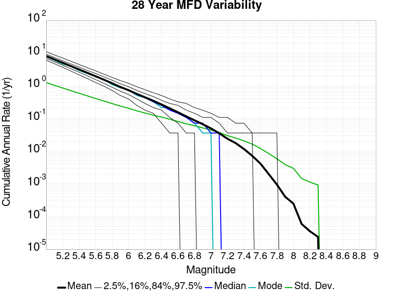
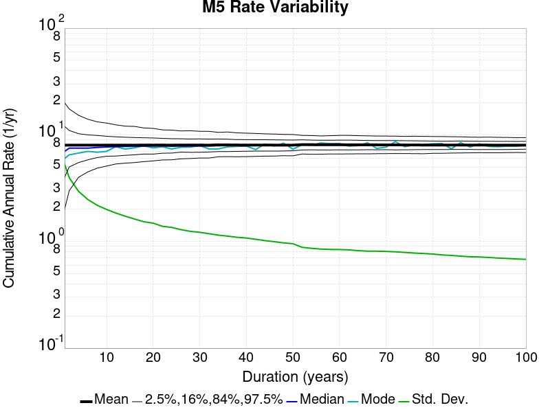
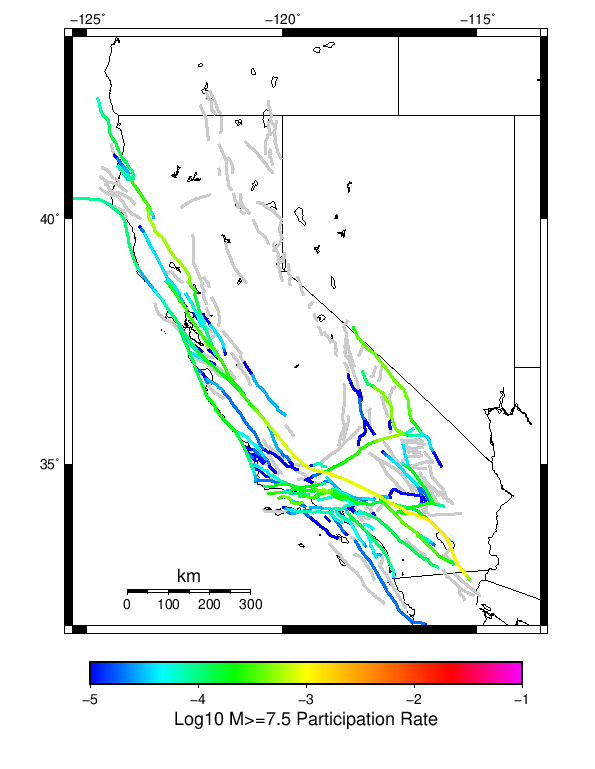

Start 1919, 100 yr, Log10(k)=-2.31, p=1.08, c=0.04, Spontaneous Results
| Start 1919, 100 yr, Log10(k)=-2.31, p=1.08, c=0.04, Spontaneous |
|---|
| Num Simulations | 1000 |
| Start Time | 1919/01/01 00:00:00 UTC |
| Start Time Epoch Milliseconds | -1609459200000 |
| Duration | 100 Years |
| Includes Spontaneous? | true |
| Trigger Ruptures | (none) |
| Historical Ruptures | (none) |
| Config Generated With | u3etas_config_builder.sh --start-year 1919 --num-simulations 1000 --duration-years 100 --include-spontaneous --etas-k -2.31 --etas-p 1.08 --etas-c 0.04 --hpc-site USC_HPC --nodes 36 --hours 24 --queue scec |
Table Of Contents
Magnitude Frequency Distribution
(top)
Legend
- Mean (thick black line): mean annual rate across all 1000 catalogs
- 2.5%,97.5% (thin black lines): annual rate percentiles across all 1000 catalogs
- Median (thin blue line): median annual rate across all 1000 catalogs
- Mode (thin cyan line): modal annual rate across all 1000 catalogs (scaled to annualized value)
- 100 yr Probability (thin red line): 100 year probability calculated as the fraction of catalogs with at least 1 occurrence
- 100 yr Supraseismogenic Probability (thin dashed red line): same as above, but only for supraseismogenic ruptures on explicitly modeled UCERF3 faults
- 95% Conf (light red shaded region): binomial 95% confidence bounds on probability

| Mag | Mean | 2.5 %ile | 97.5 %ile | Median | Mode | 100 yr Probability | 100 yr Supra-Seis Prob |
|---|
| M≥5 | 0.068 | 0.000 | 0.270 | 0.050 | 0.030 | 0.962 (96.20%) | 0.235 (23.50%) |
| M≥5.1 | 0.054 | 0.000 | 0.220 | 0.040 | 0.020 | 0.935 (93.50%) | 0.235 (23.50%) |
| M≥5.2 | 0.043 | 0.000 | 0.180 | 0.030 | 0.020 | 0.897 (89.70%) | 0.235 (23.50%) |
| M≥5.3 | 0.034 | 0.000 | 0.150 | 0.020 | 0.010 | 0.850 (85.00%) | 0.235 (23.50%) |
| M≥5.4 | 0.027 | 0.000 | 0.120 | 0.020 | 0.010 | 0.794 (79.40%) | 0.235 (23.50%) |
| M≥5.5 | 0.021 | 0.000 | 0.100 | 0.010 | 0.010 | 0.720 (72.00%) | 0.235 (23.50%) |
| M≥5.6 | 0.017 | 0.000 | 0.090 | 0.010 | 0.000 | 0.658 (65.80%) | 0.235 (23.50%) |
| M≥5.7 | 0.013 | 0.000 | 0.070 | 0.010 | 0.000 | 0.584 (58.40%) | 0.235 (23.50%) |
| M≥5.8 | 0.010 | 0.000 | 0.050 | 0.010 | 0.000 | 0.504 (50.40%) | 0.235 (23.50%) |
| M≥5.9 | 7.82E-3 | 0.000 | 0.050 | 0.000 | 0.000 | 0.417 (41.70%) | 0.225 (22.50%) |
| M≥6 | 6.02E-3 | 0.000 | 0.030 | 0.000 | 0.000 | 0.352 (35.20%) | 0.220 (22.00%) |
| M≥6.1 | 4.53E-3 | 0.000 | 0.030 | 0.000 | 0.000 | 0.288 (28.80%) | 0.183 (18.30%) |
| M≥6.2 | 3.70E-3 | 0.000 | 0.030 | 0.000 | 0.000 | 0.244 (24.40%) | 0.165 (16.50%) |
| M≥6.3 | 2.90E-3 | 0.000 | 0.020 | 0.000 | 0.000 | 0.200 (20.00%) | 0.137 (13.70%) |
| M≥6.4 | 2.39E-3 | 0.000 | 0.020 | 0.000 | 0.000 | 0.174 (17.40%) | 0.123 (12.30%) |
| M≥6.5 | 1.78E-3 | 0.000 | 0.020 | 0.000 | 0.000 | 0.140 (14.00%) | 0.096 (9.60%) |
| M≥6.6 | 1.28E-3 | 0.000 | 0.010 | 0.000 | 0.000 | 0.103 (10.30%) | 0.074 (7.40%) |
| M≥6.7 | 8.70E-4 | 0.000 | 0.010 | 0.000 | 0.000 | 0.075 (7.50%) | 0.055 (5.50%) |
| M≥6.8 | 6.90E-4 | 0.000 | 0.010 | 0.000 | 0.000 | 0.059 (5.90%) | 0.046 (4.60%) |
| M≥6.9 | 4.70E-4 | 0.000 | 0.010 | 0.000 | 0.000 | 0.043 (4.30%) | 0.035 (3.50%) |
| M≥7 | 3.40E-4 | 0.000 | 0.010 | 0.000 | 0.000 | 0.032 (3.20%) | 0.031 (3.10%) |
| M≥7.1 | 2.30E-4 | 0.000 | 0.000 | 0.000 | 0.000 | 0.021 (2.10%) | 0.021 (2.10%) |
| M≥7.2 | 1.70E-4 | 0.000 | 0.000 | 0.000 | 0.000 | 0.016 (1.60%) | 0.016 (1.60%) |
| M≥7.3 | 6.00E-5 | 0.000 | 0.000 | 0.000 | 0.000 | 6.00E-3 (0.60%) | 6.00E-3 (0.60%) |
| M≥7.4 | 4.00E-5 | 0.000 | 0.000 | 0.000 | 0.000 | 4.00E-3 (0.40%) | 4.00E-3 (0.40%) |
| M≥7.5 | 1.00E-5 | 0.000 | 0.000 | 0.000 | 0.000 | 1.00E-3 (0.10%) | 1.00E-3 (0.10%) |
| M≥7.6 | 0.000 | 0.000 | 0.000 | 0.000 | 0.000 | 0.000 (0.00%) | 0.000 (0.00%) |
| M≥7.7 | 0.000 | 0.000 | 0.000 | 0.000 | 0.000 | 0.000 (0.00%) | 0.000 (0.00%) |
| M≥7.8 | 0.000 | 0.000 | 0.000 | 0.000 | 0.000 | 0.000 (0.00%) | 0.000 (0.00%) |
| M≥7.9 | 0.000 | 0.000 | 0.000 | 0.000 | 0.000 | 0.000 (0.00%) | 0.000 (0.00%) |
| M≥8 | 0.000 | 0.000 | 0.000 | 0.000 | 0.000 | 0.000 (0.00%) | 0.000 (0.00%) |
| M≥8.1 | 0.000 | 0.000 | 0.000 | 0.000 | 0.000 | 0.000 (0.00%) | 0.000 (0.00%) |
| M≥8.2 | 0.000 | 0.000 | 0.000 | 0.000 | 0.000 | 0.000 (0.00%) | 0.000 (0.00%) |
| M≥8.3 | 0.000 | 0.000 | 0.000 | 0.000 | 0.000 | 0.000 (0.00%) | 0.000 (0.00%) |
| M≥8.4 | 0.000 | 0.000 | 0.000 | 0.000 | 0.000 | 0.000 (0.00%) | 0.000 (0.00%) |
| M≥8.5 | 0.000 | 0.000 | 0.000 | 0.000 | 0.000 | 0.000 (0.00%) | 0.000 (0.00%) |
| M≥8.6 | 0.000 | 0.000 | 0.000 | 0.000 | 0.000 | 0.000 (0.00%) | 0.000 (0.00%) |
| M≥8.7 | 0.000 | 0.000 | 0.000 | 0.000 | 0.000 | 0.000 (0.00%) | 0.000 (0.00%) |
| M≥8.8 | 0.000 | 0.000 | 0.000 | 0.000 | 0.000 | 0.000 (0.00%) | 0.000 (0.00%) |
| M≥8.9 | 0.000 | 0.000 | 0.000 | 0.000 | 0.000 | 0.000 (0.00%) | 0.000 (0.00%) |
| M≥9 | 0.000 | 0.000 | 0.000 | 0.000 | 0.000 | 0.000 (0.00%) | 0.000 (0.00%) |
Long Term Rate Variability
(top)
80 Year Variability
(top)

Download CSV Here
| Magnitude | Mean | Median | Mode | Std. Dev. | 2.5 %-ile | 16 %-ile | 84 %-ile | 97.5 %-ile |
|---|
| 5.0 | 0.0847625 | 0.0625 | 0.0375 | 0.096017614 | 0.0 | 0.025 | 0.125 | 0.3375 |
| 5.1 | 0.06735 | 0.05 | 0.025 | 0.07800481 | 0.0 | 0.0125 | 0.1 | 0.275 |
| 5.2 | 0.053825 | 0.0375 | 0.025 | 0.064738885 | 0.0 | 0.0125 | 0.0875 | 0.225 |
| 5.3 | 0.0426125 | 0.025 | 0.0125 | 0.053581268 | 0.0 | 0.0125 | 0.075 | 0.1875 |
| 5.4 | 0.0338625 | 0.025 | 0.0125 | 0.043327123 | 0.0 | 0.0 | 0.0625 | 0.15 |
| 5.5 | 0.026675 | 0.0125 | 0.0125 | 0.035978135 | 0.0 | 0.0 | 0.05 | 0.125 |
| 5.6 | 0.0215125 | 0.0125 | 0.0 | 0.029892718 | 0.0 | 0.0 | 0.0375 | 0.1125 |
| 5.7 | 0.0168625 | 0.0125 | 0.0 | 0.024644619 | 0.0 | 0.0 | 0.0375 | 0.0875 |
| 5.8 | 0.01265 | 0.0125 | 0.0 | 0.019993806 | 0.0 | 0.0 | 0.025 | 0.0625 |
| 5.9 | 0.009775 | 0.0 | 0.0 | 0.017349362 | 0.0 | 0.0 | 0.025 | 0.0625 |
| 6.0 | 0.007525 | 0.0 | 0.0 | 0.014366394 | 0.0 | 0.0 | 0.0125 | 0.0375 |
| 6.1 | 0.0056625 | 0.0 | 0.0 | 0.011796991 | 0.0 | 0.0 | 0.0125 | 0.0375 |
| 6.2 | 0.004625 | 0.0 | 0.0 | 0.010426797 | 0.0 | 0.0 | 0.0125 | 0.0375 |
| 6.3 | 0.003625 | 0.0 | 0.0 | 0.008877679 | 0.0 | 0.0 | 0.0125 | 0.025 |
| 6.4 | 0.0029875 | 0.0 | 0.0 | 0.0077486215 | 0.0 | 0.0 | 0.0125 | 0.025 |
| 6.5 | 0.002225 | 0.0 | 0.0 | 0.006105256 | 0.0 | 0.0 | 0.0 | 0.025 |
| 6.6 | 0.0016 | 0.0 | 0.0 | 0.0051201773 | 0.0 | 0.0 | 0.0 | 0.0125 |
| 6.7 | 0.0010875 | 0.0 | 0.0 | 0.0040220977 | 0.0 | 0.0 | 0.0 | 0.0125 |
| 6.8 | 8.625E-4 | 0.0 | 0.0 | 0.0036298097 | 0.0 | 0.0 | 0.0 | 0.0125 |
| 6.9 | 5.875E-4 | 0.0 | 0.0 | 0.0028734736 | 0.0 | 0.0 | 0.0 | 0.0125 |
| 7.0 | 4.25E-4 | 0.0 | 0.0 | 0.0024005494 | 0.0 | 0.0 | 0.0 | 0.0125 |
| 7.1 | 2.875E-4 | 0.0 | 0.0 | 0.0020347566 | 0.0 | 0.0 | 0.0 | 0.0 |
| 7.2 | 2.125E-4 | 0.0 | 0.0 | 0.0017107076 | 0.0 | 0.0 | 0.0 | 0.0 |
| 7.3 | 7.5E-5 | 0.0 | 0.0 | 9.6581975E-4 | 0.0 | 0.0 | 0.0 | 0.0 |
| 7.4 | 5.0E-5 | 0.0 | 0.0 | 7.893815E-4 | 0.0 | 0.0 | 0.0 | 0.0 |
| 7.5 | 1.25E-5 | 0.0 | 0.0 | 3.952847E-4 | 0.0 | 0.0 | 0.0 | 0.0 |
| 7.6 | 0.0 | 0.0 | 0.0 | 0.0 | 0.0 | 0.0 | 0.0 | 0.0 |
| 7.7 | 0.0 | 0.0 | 0.0 | 0.0 | 0.0 | 0.0 | 0.0 | 0.0 |
| 7.8 | 0.0 | 0.0 | 0.0 | 0.0 | 0.0 | 0.0 | 0.0 | 0.0 |
| 7.9 | 0.0 | 0.0 | 0.0 | 0.0 | 0.0 | 0.0 | 0.0 | 0.0 |
| 8.0 | 0.0 | 0.0 | 0.0 | 0.0 | 0.0 | 0.0 | 0.0 | 0.0 |
| 8.1 | 0.0 | 0.0 | 0.0 | 0.0 | 0.0 | 0.0 | 0.0 | 0.0 |
| 8.2 | 0.0 | 0.0 | 0.0 | 0.0 | 0.0 | 0.0 | 0.0 | 0.0 |
| 8.3 | 0.0 | 0.0 | 0.0 | 0.0 | 0.0 | 0.0 | 0.0 | 0.0 |
| 8.4 | 0.0 | 0.0 | 0.0 | 0.0 | 0.0 | 0.0 | 0.0 | 0.0 |
| 8.5 | 0.0 | 0.0 | 0.0 | 0.0 | 0.0 | 0.0 | 0.0 | 0.0 |
| 8.6 | 0.0 | 0.0 | 0.0 | 0.0 | 0.0 | 0.0 | 0.0 | 0.0 |
| 8.7 | 0.0 | 0.0 | 0.0 | 0.0 | 0.0 | 0.0 | 0.0 | 0.0 |
| 8.8 | 0.0 | 0.0 | 0.0 | 0.0 | 0.0 | 0.0 | 0.0 | 0.0 |
| 8.9 | 0.0 | 0.0 | 0.0 | 0.0 | 0.0 | 0.0 | 0.0 | 0.0 |
| 9.0 | 0.0 | 0.0 | 0.0 | 0.0 | 0.0 | 0.0 | 0.0 | 0.0 |
28 Year Variability
(top)

Download CSV Here
| Magnitude | Mean | Median | Mode | Std. Dev. | 2.5 %-ile | 16 %-ile | 84 %-ile | 97.5 %-ile |
|---|
| 5.0 | 0.08072619 | 0.0 | 0.0 | 0.1952122 | 0.0 | 0.0 | 0.17857143 | 0.5714286 |
| 5.1 | 0.06414286 | 0.0 | 0.0 | 0.15740857 | 0.0 | 0.0 | 0.14285715 | 0.4642857 |
| 5.2 | 0.051261906 | 0.0 | 0.0 | 0.12905088 | 0.0 | 0.0 | 0.10714286 | 0.39285713 |
| 5.3 | 0.040583335 | 0.0 | 0.0 | 0.10536611 | 0.0 | 0.0 | 0.071428575 | 0.32142857 |
| 5.4 | 0.03225 | 0.0 | 0.0 | 0.0847676 | 0.0 | 0.0 | 0.071428575 | 0.25 |
| 5.5 | 0.025404762 | 0.0 | 0.0 | 0.069362335 | 0.0 | 0.0 | 0.035714287 | 0.21428572 |
| 5.6 | 0.020488095 | 0.0 | 0.0 | 0.0571811 | 0.0 | 0.0 | 0.035714287 | 0.17857143 |
| 5.7 | 0.016059523 | 0.0 | 0.0 | 0.046557054 | 0.0 | 0.0 | 0.035714287 | 0.14285715 |
| 5.8 | 0.012047619 | 0.0 | 0.0 | 0.037113648 | 0.0 | 0.0 | 0.035714287 | 0.10714286 |
| 5.9 | 0.009309524 | 0.0 | 0.0 | 0.03149436 | 0.0 | 0.0 | 0.0 | 0.10714286 |
| 6.0 | 0.0071666664 | 0.0 | 0.0 | 0.025768125 | 0.0 | 0.0 | 0.0 | 0.071428575 |
| 6.1 | 0.0053928574 | 0.0 | 0.0 | 0.020895546 | 0.0 | 0.0 | 0.0 | 0.071428575 |
| 6.2 | 0.004404762 | 0.0 | 0.0 | 0.018288003 | 0.0 | 0.0 | 0.0 | 0.035714287 |
| 6.3 | 0.003452381 | 0.0 | 0.0 | 0.015432448 | 0.0 | 0.0 | 0.0 | 0.035714287 |
| 6.4 | 0.0028452382 | 0.0 | 0.0 | 0.013396434 | 0.0 | 0.0 | 0.0 | 0.035714287 |
| 6.5 | 0.0021190476 | 0.0 | 0.0 | 0.010504396 | 0.0 | 0.0 | 0.0 | 0.035714287 |
| 6.6 | 0.0015238095 | 0.0 | 0.0 | 0.008714046 | 0.0 | 0.0 | 0.0 | 0.035714287 |
| 6.7 | 0.0010357143 | 0.0 | 0.0 | 0.0067923893 | 0.0 | 0.0 | 0.0 | 0.0 |
| 6.8 | 8.2142855E-4 | 0.0 | 0.0 | 0.0060973587 | 0.0 | 0.0 | 0.0 | 0.0 |
| 6.9 | 5.595238E-4 | 0.0 | 0.0 | 0.0048040585 | 0.0 | 0.0 | 0.0 | 0.0 |
| 7.0 | 4.047619E-4 | 0.0 | 0.0 | 0.0039997455 | 0.0 | 0.0 | 0.0 | 0.0 |
| 7.1 | 2.7380954E-4 | 0.0 | 0.0 | 0.0033776357 | 0.0 | 0.0 | 0.0 | 0.0 |
| 7.2 | 2.0238095E-4 | 0.0 | 0.0 | 0.0028354812 | 0.0 | 0.0 | 0.0 | 0.0 |
| 7.3 | 7.142857E-5 | 0.0 | 0.0 | 0.0015958594 | 0.0 | 0.0 | 0.0 | 0.0 |
| 7.4 | 4.7619047E-5 | 0.0 | 0.0 | 0.0013034489 | 0.0 | 0.0 | 0.0 | 0.0 |
| 7.5 | 1.1904762E-5 | 0.0 | 0.0 | 6.5205066E-4 | 0.0 | 0.0 | 0.0 | 0.0 |
| 7.6 | 0.0 | 0.0 | 0.0 | 0.0 | 0.0 | 0.0 | 0.0 | 0.0 |
| 7.7 | 0.0 | 0.0 | 0.0 | 0.0 | 0.0 | 0.0 | 0.0 | 0.0 |
| 7.8 | 0.0 | 0.0 | 0.0 | 0.0 | 0.0 | 0.0 | 0.0 | 0.0 |
| 7.9 | 0.0 | 0.0 | 0.0 | 0.0 | 0.0 | 0.0 | 0.0 | 0.0 |
| 8.0 | 0.0 | 0.0 | 0.0 | 0.0 | 0.0 | 0.0 | 0.0 | 0.0 |
| 8.1 | 0.0 | 0.0 | 0.0 | 0.0 | 0.0 | 0.0 | 0.0 | 0.0 |
| 8.2 | 0.0 | 0.0 | 0.0 | 0.0 | 0.0 | 0.0 | 0.0 | 0.0 |
| 8.3 | 0.0 | 0.0 | 0.0 | 0.0 | 0.0 | 0.0 | 0.0 | 0.0 |
| 8.4 | 0.0 | 0.0 | 0.0 | 0.0 | 0.0 | 0.0 | 0.0 | 0.0 |
| 8.5 | 0.0 | 0.0 | 0.0 | 0.0 | 0.0 | 0.0 | 0.0 | 0.0 |
| 8.6 | 0.0 | 0.0 | 0.0 | 0.0 | 0.0 | 0.0 | 0.0 | 0.0 |
| 8.7 | 0.0 | 0.0 | 0.0 | 0.0 | 0.0 | 0.0 | 0.0 | 0.0 |
| 8.8 | 0.0 | 0.0 | 0.0 | 0.0 | 0.0 | 0.0 | 0.0 | 0.0 |
| 8.9 | 0.0 | 0.0 | 0.0 | 0.0 | 0.0 | 0.0 | 0.0 | 0.0 |
| 9.0 | 0.0 | 0.0 | 0.0 | 0.0 | 0.0 | 0.0 | 0.0 | 0.0 |
Variability Duration Dependence
(top)

Download CSV Here
| Duration (years) | Mean | Median | Mode | Std. Dev. | 2.5 %-ile | 16 %-ile | 84 %-ile | 97.5 %-ile |
|---|
| 1.0 | 0.06781 | 0.0 | 0.0 | 1.022097 | 0.0 | 0.0 | 0.0 | 0.0 |
| 2.0 | 0.06781 | 0.0 | 0.0 | 0.721143 | 0.0 | 0.0 | 0.0 | 0.0 |
| 4.0 | 0.06781 | 0.0 | 0.0 | 0.50767076 | 0.0 | 0.0 | 0.0 | 1.0 |
| 6.0 | 0.070635416 | 0.0 | 0.0 | 0.42093545 | 0.0 | 0.0 | 0.0 | 1.0 |
| 8.0 | 0.070635416 | 0.0 | 0.0 | 0.3628296 | 0.0 | 0.0 | 0.0 | 0.875 |
| 10.0 | 0.06781 | 0.0 | 0.0 | 0.31676307 | 0.0 | 0.0 | 0.0 | 0.8 |
| 12.0 | 0.070635416 | 0.0 | 0.0 | 0.2934346 | 0.0 | 0.0 | 0.0 | 0.75 |
| 14.0 | 0.06919388 | 0.0 | 0.0 | 0.2677683 | 0.0 | 0.0 | 0.0 | 0.71428573 |
| 16.0 | 0.070635416 | 0.0 | 0.0 | 0.25166056 | 0.0 | 0.0 | 0.0625 | 0.6875 |
| 18.0 | 0.07534444 | 0.0 | 0.0 | 0.24311477 | 0.0 | 0.0 | 0.11111111 | 0.6666667 |
| 20.0 | 0.06781 | 0.0 | 0.0 | 0.21880329 | 0.0 | 0.0 | 0.1 | 0.6 |
| 22.0 | 0.07705682 | 0.0 | 0.0 | 0.21970923 | 0.0 | 0.0 | 0.13636364 | 0.6363636 |
| 24.0 | 0.070635416 | 0.0 | 0.0 | 0.20140013 | 0.0 | 0.0 | 0.125 | 0.5833333 |
| 26.0 | 0.0869359 | 0.0 | 0.0 | 0.21022853 | 0.0 | 0.0 | 0.1923077 | 0.61538464 |
| 28.0 | 0.08072619 | 0.0 | 0.0 | 0.1952122 | 0.0 | 0.0 | 0.17857143 | 0.5714286 |
| 30.0 | 0.07534444 | 0.0 | 0.0 | 0.18219806 | 0.0 | 0.0 | 0.16666667 | 0.53333336 |
| 32.0 | 0.070635416 | 0.0 | 0.0 | 0.17081068 | 0.0 | 0.0 | 0.15625 | 0.5 |
| 34.0 | 0.09972059 | 0.0 | 0.0 | 0.18830077 | 0.0 | 0.0 | 0.20588236 | 0.5882353 |
| 36.0 | 0.094180554 | 0.0 | 0.0 | 0.17783962 | 0.0 | 0.0 | 0.19444445 | 0.5555556 |
| 38.0 | 0.08922368 | 0.0 | 0.0 | 0.16847965 | 0.0 | 0.0 | 0.18421052 | 0.5263158 |
| 40.0 | 0.0847625 | 0.0 | 0.0 | 0.16005567 | 0.0 | 0.0 | 0.175 | 0.5 |
| 42.0 | 0.08072619 | 0.0 | 0.0 | 0.15243396 | 0.0 | 0.0 | 0.16666667 | 0.47619048 |
| 44.0 | 0.07705682 | 0.0 | 0.0 | 0.14550515 | 0.0 | 0.0 | 0.1590909 | 0.45454547 |
| 46.0 | 0.07370652 | 0.0 | 0.0 | 0.13917884 | 0.0 | 0.0 | 0.1521739 | 0.4347826 |
| 48.0 | 0.070635416 | 0.0 | 0.0 | 0.13337971 | 0.0 | 0.0 | 0.14583333 | 0.41666666 |
| 50.0 | 0.06781 | 0.0 | 0.0 | 0.12804453 | 0.0 | 0.0 | 0.14 | 0.4 |
| 52.0 | 0.13040385 | 0.09615385 | 0.057692308 | 0.1477194 | 0.0 | 0.03846154 | 0.1923077 | 0.5192308 |
| 54.0 | 0.12557407 | 0.09259259 | 0.055555556 | 0.14224832 | 0.0 | 0.037037037 | 0.18518518 | 0.5 |
| 56.0 | 0.12108929 | 0.08928572 | 0.05357143 | 0.13716802 | 0.0 | 0.035714287 | 0.17857143 | 0.48214287 |
| 58.0 | 0.116913795 | 0.0862069 | 0.05172414 | 0.13243808 | 0.0 | 0.03448276 | 0.1724138 | 0.46551725 |
| 60.0 | 0.113016665 | 0.083333336 | 0.05 | 0.12802348 | 0.0 | 0.033333335 | 0.16666667 | 0.45 |
| 62.0 | 0.10937097 | 0.08064516 | 0.048387095 | 0.12389369 | 0.0 | 0.032258064 | 0.16129032 | 0.43548387 |
| 64.0 | 0.10595313 | 0.078125 | 0.046875 | 0.120022014 | 0.0 | 0.03125 | 0.15625 | 0.421875 |
| 66.0 | 0.102742426 | 0.07575758 | 0.045454547 | 0.11638498 | 0.0 | 0.030303031 | 0.15151516 | 0.4090909 |
| 68.0 | 0.09972059 | 0.073529415 | 0.04411765 | 0.112961896 | 0.0 | 0.029411765 | 0.14705883 | 0.3970588 |
| 70.0 | 0.09687143 | 0.071428575 | 0.042857144 | 0.109734416 | 0.0 | 0.028571429 | 0.14285715 | 0.3857143 |
| 72.0 | 0.094180554 | 0.06944445 | 0.041666668 | 0.106686234 | 0.0 | 0.027777778 | 0.1388889 | 0.375 |
| 74.0 | 0.09163514 | 0.067567565 | 0.04054054 | 0.10380282 | 0.0 | 0.027027028 | 0.13513513 | 0.36486486 |
| 76.0 | 0.08922368 | 0.065789476 | 0.039473683 | 0.10107117 | 0.0 | 0.02631579 | 0.13157895 | 0.35526314 |
| 78.0 | 0.0869359 | 0.06410257 | 0.03846154 | 0.0984796 | 0.0 | 0.025641026 | 0.12820514 | 0.34615386 |
| 80.0 | 0.0847625 | 0.0625 | 0.0375 | 0.096017614 | 0.0 | 0.025 | 0.125 | 0.3375 |
| 82.0 | 0.08269512 | 0.06097561 | 0.036585364 | 0.09367572 | 0.0 | 0.024390243 | 0.12195122 | 0.3292683 |
| 84.0 | 0.08072619 | 0.05952381 | 0.035714287 | 0.09144534 | 0.0 | 0.023809524 | 0.11904762 | 0.32142857 |
| 86.0 | 0.07884884 | 0.058139537 | 0.034883723 | 0.08931871 | 0.0 | 0.023255814 | 0.11627907 | 0.3139535 |
| 88.0 | 0.07705682 | 0.056818184 | 0.03409091 | 0.08728874 | 0.0 | 0.022727273 | 0.11363637 | 0.3068182 |
| 90.0 | 0.07534444 | 0.055555556 | 0.033333335 | 0.085348986 | 0.0 | 0.022222223 | 0.11111111 | 0.3 |
| 92.0 | 0.07370652 | 0.054347824 | 0.032608695 | 0.083493575 | 0.0 | 0.02173913 | 0.10869565 | 0.29347825 |
| 94.0 | 0.072138295 | 0.05319149 | 0.031914894 | 0.08171712 | 0.0 | 0.021276595 | 0.10638298 | 0.28723404 |
| 96.0 | 0.070635416 | 0.052083332 | 0.03125 | 0.080014676 | 0.0 | 0.020833334 | 0.104166664 | 0.28125 |
| 98.0 | 0.06919388 | 0.05102041 | 0.030612245 | 0.078381725 | 0.0 | 0.020408163 | 0.10204082 | 0.2755102 |
| 100.0 | 0.06781 | 0.05 | 0.03 | 0.07681409 | 0.0 | 0.02 | 0.1 | 0.27 |
Section Participation
(top)
Section Participation Plots
(top)
| Min Mag | Complete Catalog (including spontaneous) |
|---|
| All Supra. Seis. |  |
| M≥6.5 | |
| M≥7 |  |
| M≥7.5 |  |
Supra-Seismogenic Parent Sections Table
(top)
First 10 of 128 with matching ruptures shown
| Parent Name | Total Mean Annual Rate | Total 100 Year Prob |
|---|
| San Andreas (Parkfield) | 4.8E-4 | 0.044 |
| San Andreas (Creeping Section) 2011 CFM | 2.6E-4 | 0.024 |
| Mendocino | 2.3E-4 | 0.023 |
| San Andreas (Mojave S) | 1.1E-4 | 0.009 |
| Ortigalita (North) | 1.0E-4 | 0.007 |
| Green Valley 2011 CFM | 9.0E-5 | 0.009 |
| Calaveras (So) 2011 CFM | 8.0E-5 | 0.008 |
| Cerro Prieto | 8.0E-5 | 0.007 |
| Concord 2011 CFM | 8.0E-5 | 0.008 |
| Hunting Creek - Berryessa 2011 CFM | 7.0E-5 | 0.007 |
M≥6.5 Parent Sections Table
(top)
First 10 of 87 with matching ruptures shown
| Parent Name | Total Mean Annual Rate | Total 100 Year Prob |
|---|
| Mendocino | 9.0E-5 | 0.009 |
| San Andreas (Creeping Section) 2011 CFM | 8.0E-5 | 0.008 |
| Cerro Prieto | 7.0E-5 | 0.007 |
| San Andreas (Santa Cruz Mts) 2011 CFM | 6.0E-5 | 0.006 |
| Ortigalita (North) | 5.0E-5 | 0.004 |
| Calaveras (Central) 2011 CFM | 4.0E-5 | 0.004 |
| Calaveras (So) - Paicines extension 2011 CFM | 4.0E-5 | 0.004 |
| Concord 2011 CFM | 4.0E-5 | 0.004 |
| Coyote Canyon | 4.0E-5 | 0.003 |
| Green Valley 2011 CFM | 4.0E-5 | 0.004 |
M≥7 Parent Sections Table
(top)
First 10 of 45 with matching ruptures shown
| Parent Name | Total Mean Annual Rate | Total 100 Year Prob |
|---|
| San Andreas (Santa Cruz Mts) 2011 CFM | 5.0E-5 | 0.005 |
| San Andreas (Creeping Section) 2011 CFM | 4.0E-5 | 0.004 |
| San Diego Trough south | 3.0E-5 | 0.003 |
| Cerro Prieto | 2.0E-5 | 0.002 |
| Little Salmon (Offshore) | 2.0E-5 | 0.002 |
| Little Salmon (Onshore) | 2.0E-5 | 0.002 |
| Palos Verdes | 2.0E-5 | 0.002 |
| Bullion Mountains | 1.0E-5 | 0.001 |
| Butano 2011 CFM | 1.0E-5 | 0.001 |
| Calaveras (Central) 2011 CFM | 1.0E-5 | 0.001 |
M≥7.5 Parent Sections Table
(top)
| Parent Name | Total Mean Annual Rate | Total 100 Year Prob |
|---|
| Calico-Hidalgo | 1.0E-5 | 0.001 |
| Pinto Mtn | 1.0E-5 | 0.001 |
Gridded Nucleation
(top)
| Min Mag | Complete Catalog (including spontaneous) |
|---|
| M≥5 |  |
| M≥6 | |
| M≥7 |  |
(top)
{
"numSimulations": 1000,
"duration": 100.0,
"startYear": 1919,
"includeSpontaneous": true,
"randomSeed": 1566932703125,
"binaryOutput": true,
"binaryOutputFilters": [
{
"prefix": "results_complete",
"descendantsOnly": false
},
{
"prefix": "results_m5_preserve_chain",
"minMag": 5.0,
"preserveChainBelowMag": true,
"descendantsOnly": false
}
],
"forceRecalc": false,
"simulationName": "Start 1919, 100 yr, Log10(k)\u003d-2.31, p\u003d1.08, c\u003d0.04, Spontaneous",
"numRetries": 3,
"outputDir": "${ETAS_SIM_DIR}/2019_08_27-Start1919_100yr_Log10_k_2p31_p1p08_c0p04_Spontaneous-includeSpont-full_td-scale1.14-modParams",
"cacheDir": "${ETAS_LAUNCHER}/inputs/cache_fm3p1_ba",
"fssFile": "${ETAS_LAUNCHER}/inputs/2013_05_10-ucerf3p3-production-10runs_COMPOUND_SOL_FM3_1_SpatSeisU3_MEAN_BRANCH_AVG_SOL.zip",
"probModel": "FULL_TD",
"applySubSeisForSupraNucl": true,
"totRateScaleFactor": 1.14,
"gridSeisCorr": true,
"timeIndependentERF": false,
"griddedOnly": false,
"imposeGR": false,
"includeIndirectTriggering": true,
"gridSeisDiscr": 0.1,
"catalogCompletenessModel": "RELAXED",
"etas_p": 1.08,
"etas_c": 0.04,
"etas_log10_k": -2.31,
"configCommand": "u3etas_config_builder.sh --start-year 1919 --num-simulations 1000 --duration-years 100 --include-spontaneous --etas-k -2.31 --etas-p 1.08 --etas-c 0.04 --hpc-site USC_HPC --nodes 36 --hours 24 --queue scec",
"configTime": 1566932703125
}